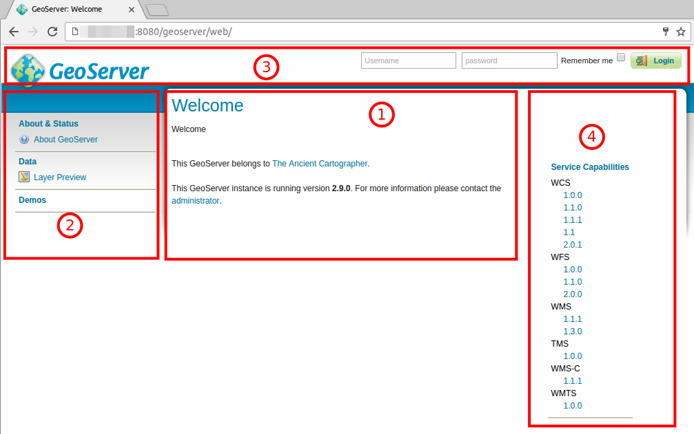
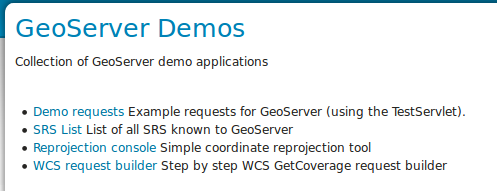
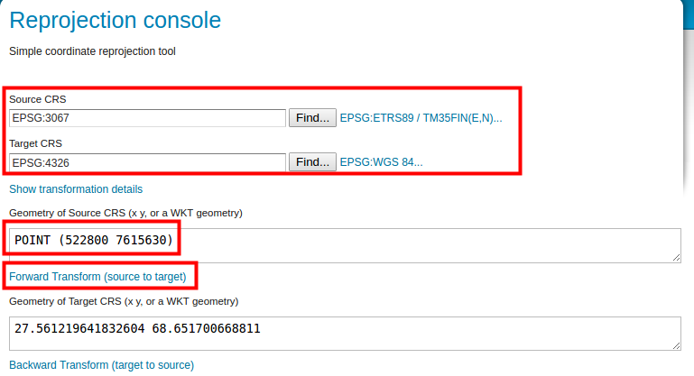

Harjoitus 1.1: Asennus ja käyttöönotto
Harjoituksen sisältö
Olemassa olevaan GeoServer-palvelimeen otetaan yhteys web-selaimen kautta. Opitaan muokkaamaan palvelimen yleistietoja ja asettamaan ylläpitäjän käyttäjäprofiilitiedot (tunnus ja salasana).
Harjoituksen tavoite
Harjoituksen jälkeen opiskelija osaa kirjautua ylläpitäjänä GeoServeriin ja tuntee yleisellä tasolla sen käyttöliittymän.
Arvioitu kesto
40 minuuttia.
Valmistautuminen
Käynnistä koneessa web-selain ja kirjaudu osoitteeseen:
Jos käytössä on etäpalvelin, kysy oma ip-osoitteesi ja portti opettajalta. Muokkaa sitten verkko-osoitteen localhost:8080-osaa ohjeiden mukaan.
Edessäsi on GeoServerin käyttöliittymä. Ennen kun kirjaudut sisään, näet muutamia yleisiä tietoja palvelimesta.

Keskellä (1) on yleistä tietoa palvelimesta ja sen omistajasta/ylläpitäjästä (näitä päivitetään pian). Keskellä näkyy asennetun GeoServerin versionumero, joka on kuvassa 2.9.0. Tämä on GeoServer-palvelimen aloitussivu ja siihen pääset aina painamalla GeoServer-logoa vasemmalta ylhäältä
Lähtökohtaisesti keskellä näkyy vasemmalla puolella sijaitsevan sivupalkin (jäljempänä “päävalikko” (2)) valintojen tarkempia tietoja.
Päävalikon (2) avulla hallitaan ja tarkastellaan palvelimen toimintoja.
Yläpalkissa (3) on kirjautumistiedot ja GeoServer-logo, jonka kautta pääset aina aloitussivulle.
Oikealla puolella sijaitseva sivupalkki (4) näyttää aloitusnäkymässä palvelimen tukemat karttapalvelut ja niiden versiot.
Päävalikko
Päävalikossa on näkyvissä aloitussivulla vain muutamia toimintoja. Nämä ovat nähtävissä kaikille, jotka tietävät palvelimen osoiteen (URL).
About & Status -osio tarjoaa vain About GeoServer -valinnan, joka kertoo tarkemmin GeoServerin asennuksen tietoja ja antaa linkkejä GeoServerin dokumentaatioon. GeoTools- ja GeoWebCache-ohjelmistojen versiotiedot voit tarkistaa myös tältä sivulta.
Data-osiossa on Layer Preview -valinta, jonka avulla voidaan esikatsella palvelimella julkaistuja tasoja (layers).
Demos-osion kautta voi tutustua muutaman karttapalvelutyypin toimintaan.
Tutustu niihin lyhyesti nyt, ja kysy kouluttajalta mitä eri elementit tarkoittavat.
About GeoServer
Avaa About GeoServer ja tutki, mikä GeoServer-versio sinulla on käytössä ja mitkä muiden asennettujen ohjelmistojen versiot ovat. Tämäntyyppiset tiedot ovat tärkeitä palvelimen ongelmia selvitettäessä, tapahtuipa ongelmatilanteiden ratkaiseminen omatoimisesti taikka tukipalvelun avulla.
Layer Preview
Kokeile Layer Preview -toimintoa ja esikatsele GeoServerin oletusaineistoja. Tätä näkymää tulemme käyttämään usein kurssin aikana. Käytä nyt muutama minuutti oppiaksesi sen perustoiminnallisuudet.
Service Capabilities (palvelutoiminnallisuudet)
Palaa palvelimen pääsivulle painamalla GeoServer-logoa. Oikealla puolella löydät Service Capabilities -palkin.
Ennen kun kirjaudutaan palvelimelle voit nähdä, mitä rajapintapalveluita käytössä olevalla GeoServerin asennuksella on mahdollista julkaista.
Harjoituksen GeoServerille on asennettu oletuksena WCS, WFS, WMS, TMS, WMS-C ja WMTS. Muita rajapintapalveluita, kuten esimerkiksi WPS-palvelu, voidaan julkaista GeoServeriin laajennosten avulla. Painamalla rajapintapalvelujen versionumeroita, voit tutustua niiden toiminnallisuuksiin (capabilities).
Tämä sivupalkki on nähtävissä vain aloitussivulla. Muista, että aloitussivuun pääset aina painamalla GeoServer-logoa.
Demos
Tämän valikon alta löytyy muutamia GeoServerin testityökaluja:

Demo requests
Kokeile erilaisten kyselyjen (toiminnallisuuksien) tuloksia ja näe, mitä kukin kyselykomento tuottaa. Kokeile WMS_getMap_OpenLayers.url-kyselyn toimivuutta valitsemalla kyseinen kysely valikosta ja paina Submit-toimintoa.
GeoServerin eri toiminnot ja operaatiot muodostuvat URL:n liittyvistä parametreistä. Parametrit ohjaavat Geoserverin rajapintapalveluita: mitä karttatasoa kysytään, miltä alueelta tietoja haetaan tai kuva muodostetaan, vastauksen koordinaattijärjestelmä jne.
Muokkaa kyselyn parametrejä BBOX, WIDTH ja HEIGHT. Mitä vaikutuksia muutoksilla on vastaukseen?
SRS List ja Reprojection console
SRS List -toiminto listaa Geoserverin tukemat koordinaattijärjestelmät. Geoserver sisältää suurimman osan käytettävistä koordinaattijärjestelmistä eli CRS:t (Coordinate Reference System). SRS (Spatial Reference System) on synonyymi CRS:lle.
Koordinaattijärjestelmien välisiä muunnoksia ja konversioita voit kokeilla Reprojection Console-toiminnon avulla.
Koordinaatit esitetään WKT-formaatissa (Well Known Text).
Seuraavassa kuvassa on piste geometria määritelty WKT-formaatissa EPSG:3067 koordinaattijärjestelmässä POINT (522800 7615630):

Voit myös kokeilla ETRS89 / TM35FIN -viivageometriaa. Löydät esimerkkitiedoston koulutuskansiosta nimellä esimerkki_wkt_geometry_3067.txt. Avaa se tekstieditorissa ja käytä sitä Reprojection console -työkalussa. Kokeile muuntaa se esimerkiksi WGS 84 -järjestelmään.

WCS request builder
Tämän toiminnon avulla voit kokeilla Web Coverage Service -palvelun toimivuutta.
Lataa nurc:mosaic-aineisto PNG-tiedostona Suomen kansallisessa koordinaattijärjestelmässä (ETRS89/TM35FIN (EPSG 3067)). Jätä muut asetukset oletusarvoiksi:

Paina lopussa Get Coverage.